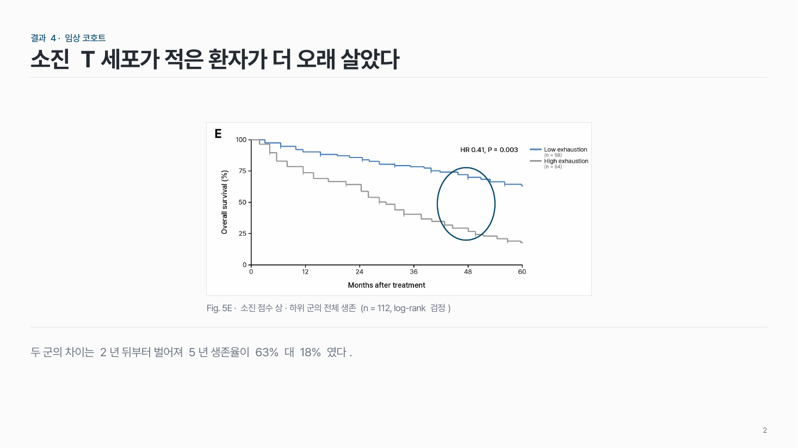
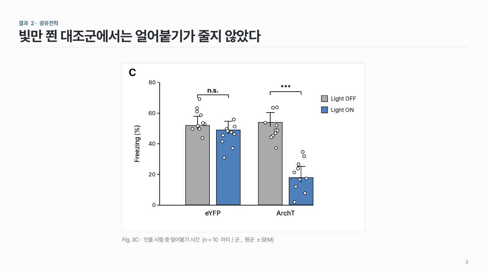

Figure + 결론 res-04
논문 figure 한 장을 크게, 볼 곳 하나를 표시하고, 결론은 아래 결론 줄에.

이 시안
막대 figure · 사각형 표시 + 짧은 말 + 결론 줄
슬라이드 제목: CA1 을 끄면 공포 기억을 꺼내지 못한다
언제 쓰나
논문 figure 한 장이 주장의 핵심 근거일 때요. Journal club 의 결과 장, Progress report 에서 다른 논문 그림을 인용할 때 맞아요.
구성
- figure 한 장을 비율 그대로 크게.
- 볼 곳 하나에 테두리 표시 (+ 짧은 말).
- 아래에 출처 · 패널 번호 한 줄.
- 결론 문장은 결론 줄 으로.
지킬 것
- 필요한 패널만 잘라 와요.
- 표시는 한 곳.
하지 말 것
- figure 비율을 늘이거나 줄이지 않아요.
- 패널 여러 개를 통째로 붙이고 설명 없이 넘기지 않아요.
- 결론을 말풍선으로 figure 위에 흩어 놓지 않아요.
더 볼 게시물 Instagram @peedori_
시안 비교
같은 내용을 옵션만 바꿔 그렸어요. 그림을 누르면 크게 보여요.
A막대 figure · 사각형 표시 + 짧은 말 + 결론 줄
슬라이드 제목: CA1 을 끄면 공포 기억을 꺼내지 못한다

B가로로 긴 figure · 원 표시 + 결론 줄
슬라이드 제목: 소진 T세포가 적은 환자가 더 오래 살았다

C표시 없이 figure + 출처만
슬라이드 제목: 빛만 쬔 대조군에서는 얼어붙기가 줄지 않았다